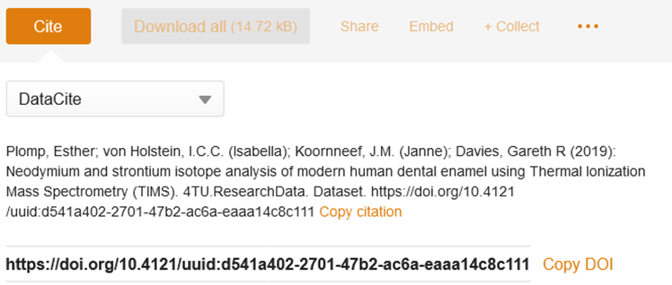
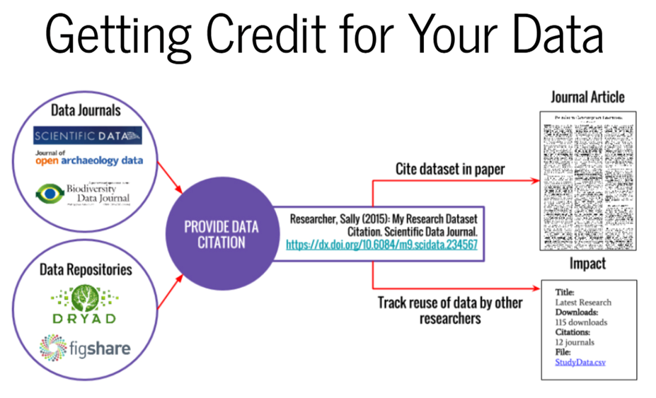

How should I cite/refer to data in my paper?
A dataset citation includes all of the same components as any other citation:
● author
● title
● year of publication
● publisher (for data, this is often the repository where it is housed, such as 4TU.ResearchData)
● version (if indicated)
● access information (a URL or DOI)
APA style example:
Author/Rightsholder. (Year). Title of data set (Version number) [Description of form]. [Retrieved from https://] OR [DOI]
DataCite citation style:
Creator (PublicationYear). Title. Version. Publisher. ResourceType. Identifier (Version and ResourceType are optional)
Example:
Heydarian, H. (Hamidreza); Schueder, F. (Florian); Strauss, M.T. (Maximilian); van Werkhoven, B. (Ben); Fazel, M. (Mohamadreza); Lidke, K.A. (Keith); Jungmann, R. (Ralf); Stallinga, S. (Sjoerd); Rieger, B. (Bernd) (2018) Single-Molecule Localization Microscopy (SMLM) 2D TU Delft logos. TU Delft. Dataset. https://doi.org/10.4121/uuid:0d42a28f-f625-41a3-ba77-25e397685466
At 4TU.ResearchData you can click on the “Cite” button to get a suggested citation and to obtain the DOI of the dataset:

You can also check http://citeas.org/ to see how you should cite a resource.
You should cite your dataset directly in the paper in places where it is relevant, and include a citation in your reference list, as well as include a Data availability statement at the end of the paper (before the acknowledgement section). See below for some examples. It is important to cite the software, as the data availability statement does not count as a citation!
The data that support the findings of this study are openly available in [repository name] at http://doi.org/%5Bdoi].
If no DOI is issued:
The data that support the findings of this study are openly available in [repository name] at [URL], reference number [reference number].
When there is an embargo period you can reserve your DOIand still include a reference to the dataset in your paper:
The data that support the findings will be available in [repository name] at [URL / DOI] following a [6 month] embargo from the date of publication to allow for commercialisation of research findings.
When data cannot be made available:
Restrictions apply to the data/software that support the findings of this study. [Explain nature of restrictions e.g. the data contains information that could compromise the privacy of research participants, NDA, licensing, agreements] Data are available upon reasonable request by contacting [name and contact details] and with permission of [third party name].
The data that support the findings of this study are available upon request. Access conditions and procedures can be found at [URL to restricted access repository such as 4TU.ResearchData].
See here for some more examples of Data Availability Statements.

More information
- See also the post on software citation.
- For more information about the practicalities and timing in linking your research outputs, see The Turing Way.